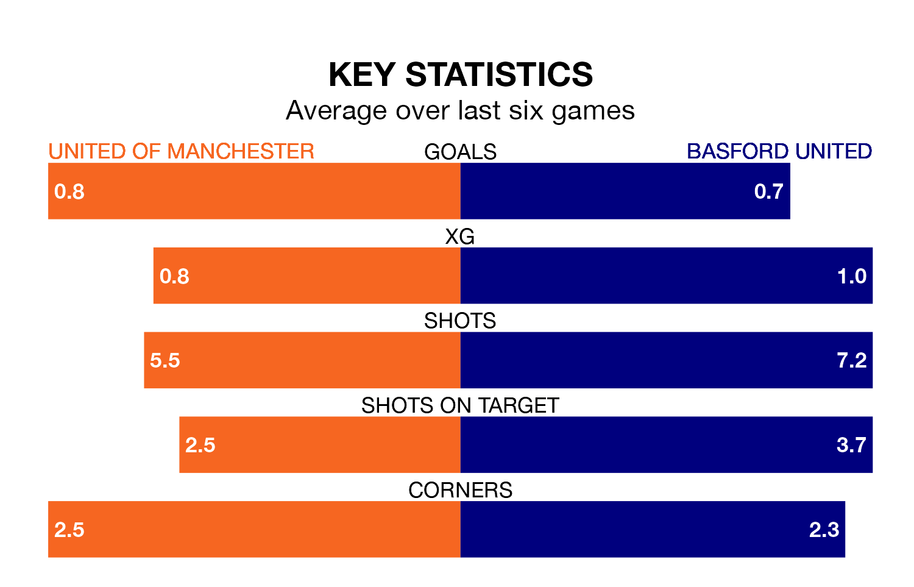

United of Manchester are heavy favourites to keep all three points at home in Saturday's kick-off against Basford United.
F.C. United, who sit 16th in the Northern Premier League with 32 games played, are priced at 1.7 to seal victory at Broadhurst Park.
Sitting two places and 13 points behind them in the table, Basford are 3.8 to win with *Betting Company*, while the draw is at 4.1.
In the last 10 years, United of Manchester and Basford have played each other on six occasions. United of Manchester won three of them, Basford one, and they drew twice.
On average, F.C. United scored 1.7 goals and Basford 1.3 in those matches.
Their last meeting was on October 21, when they played out a 1-1 draw.
United of Manchester are in disappointing form in the Northern Premier League, with two wins and four losses from their last six games.
With a win and two draws over that period, Basford's form is slightly worse – they have taken five points from 18, compared to F.C. United's six.
With 32 goals in 34 games so far this season, United are the league's third-lowest scorers with 0.9 goals per game. And they are conceding at an average rate, letting in 56 goals at a rate of 1.6 per game.
The home team are also below average scorers, with 1.4 goals per game, compared to a league average of 1.6. They have conceded 2.0 goals per game.
United of Manchester's last match was on March 16, a 2-1 win against Atherton Collieries.
Basford beat Matlock Town 2-1 last time out, also on March 16.
Updated: 10:19 (UTC), 22/03/24